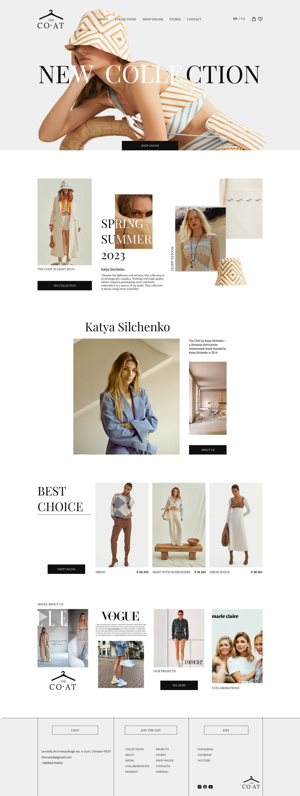
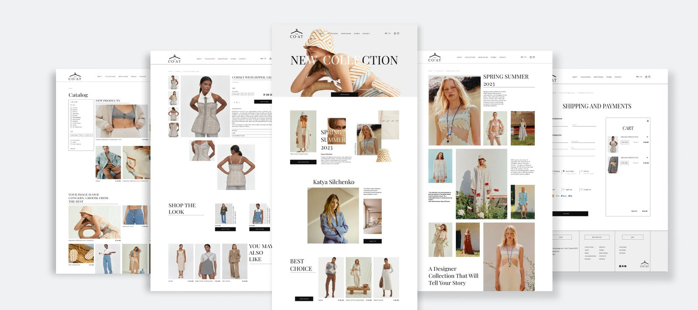

The Coat
UX/UI Designer — E-commerce & collection launch
Hover the preview to scroll the full homepage →



A first glance — the homepage and the Spring–Summer 2023 collection page.
Overview
The COAT is a Ukrainian prêt-à-porter womenswear brand founded by designer Katya Silchenko in 2014. It's known for a strong editorial identity — muted palette, sculptural silhouettes and craft-led detail — and for collections that carry a clear cultural story.
The goal of this project was to design an online store that could launch a new collection like a fashion campaign and still work hard as a shop. I took it end to end in Figma: research, information architecture, UX and UI, across desktop and mobile — framed around the Spring–Summer 2023 drop, its lookbook, and a clear path from browsing to buying.
The brief
A recognised designer with a magazine-grade visual world needed a store that felt like the brand — not a generic template — while quietly doing the commercial job. That pulled the design in a few directions at once:
- Editorial vs. shop. Present the collection like a campaign, but never bury the “add to cart”.
- A collection, not a grid. Make Spring–Summer 2023 feel like a story, with lookbook imagery leading.
- One clear path to buy. Move a visitor from lookbook → product → cart without friction or dead ends.
- A distinctive voice. Serif display type, generous whitespace and a restrained palette carried across every page.
- Built for two markets. Bilingual EN / UA and pricing in hryvnia (₴), the way the brand actually sells.
Two ways in
Most visitors arrive as one of these two people. They come with different questions, so the store had to reward both — the loyal follower who wants the new drop, and the newcomer who found the brand through press.
The follower
Already knows The COAT and is here for the new collection.
- Shops mostly from a phone, led by the imagery
- Wants the lookbook and the newest pieces first
- Ready to buy — needs sizing and cart to be effortless
The newcomer
Discovered the brand through Vogue, Elle or a friend.
- Values craft and the story behind the collection
- Compares a few options before committing
- Needs clear pricing, shipping and payment answers
Structure & flow
Before any visuals, I mapped how the store should be organised and how a visitor gets from a lookbook image to a completed order.
About
Brand story & Katya Silchenko
Collections
Spring–Summer 2023 lookbook
Shop online
The path to purchase
- Catalog & filters
- Product · Shop the look
- Cart
- Checkout · shipping & payment
Stores
Where to find the brand
Contact
Chat, newsletter, socials
Discover the collection
Land on the campaign hero and browse the Spring–Summer 2023 lookbook.
Shop the look
Jump from a styled image straight to the product, size and price.
Cart & checkout
Add to cart and complete the order with clear shipping and payment.

The final approved designs — home, catalog, product page, collection and checkout.
Designed for the phone
Fashion is browsed on the phone — in bed, on a break, mid-scroll. Every screen was designed to hold up small: the campaign hero, the catalog, the lookbook story and the product page all stay legible and easy to tap, so the follower can go from image to checkout without pinching or hunting.

Outcome
The result is a store that reads like one of the brand's campaigns and still sells. The collection leads with lookbook imagery, “shop the look” turns styling into a shortcut to the product, and the path to cart and checkout is short and obvious. The serif display type, the whitespace and the muted palette carry the brand's voice from the hero all the way to the payment screen — in both languages, priced the way the brand actually sells.
The project at a glance — measured by design decisions, not vanity metrics.
See the full flow
To walk the whole store — the campaign hero, the lookbook, “shop the look” and the checkout — view the interactive Figma prototype.
Open the prototype →Read more of my case studies
👋 Get in touch at
julidovha05@gmail.com